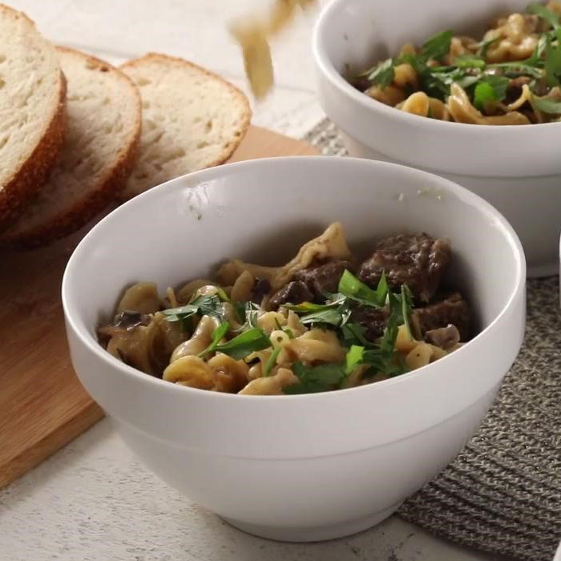

Instant Pot Beef Stroganoff, made with juicy slices of beef in a creamy gravy, is pure comfort food. This easy pressure cooker recipe is the perfect family-friendly meal for a busy or chilly night.
Prep: 20 minutes
Cooking Time: 40 minutes
Additional: 5 minutes
Total Time: 1 hour 5 minutes
Servings: 8
Link